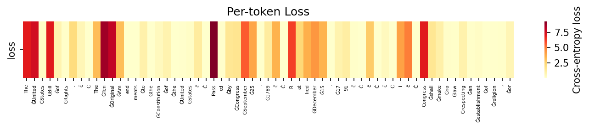
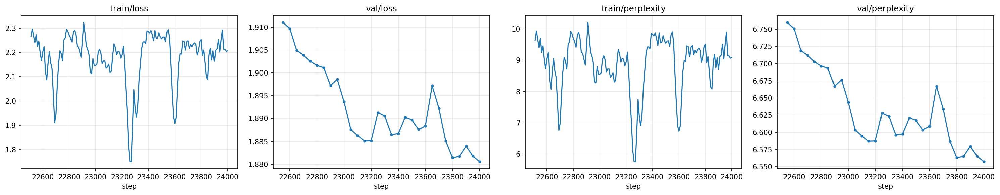
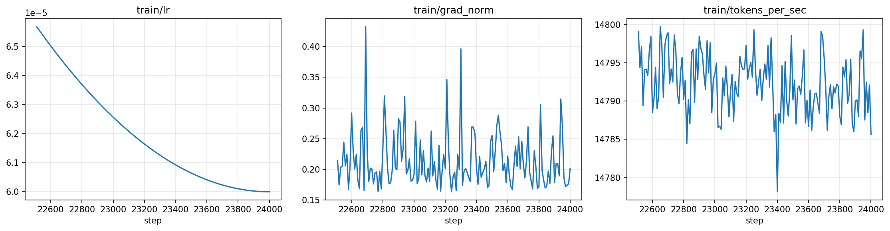
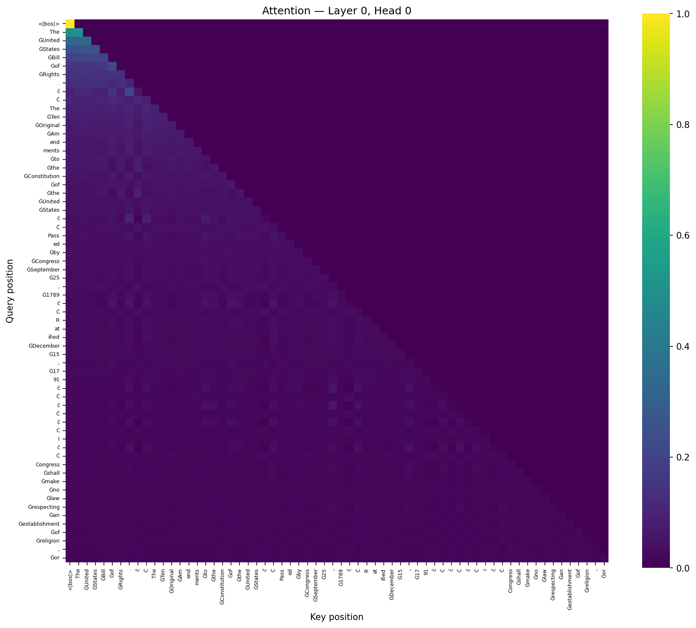
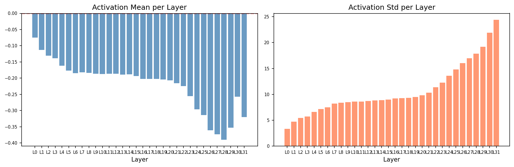
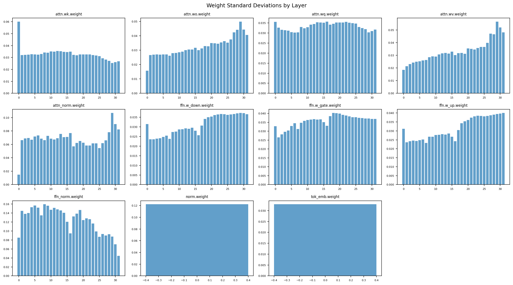

1.5 billion parameters, one Colab GPU, and every line written by hand. Today we train a tiny one live, and you get to chat with the big one.
Volodymyr Prudnikov · EPAM
| Used for | Dataset | Created by | License |
|---|---|---|---|
| Tokenizer Pretraining | FineWeb-EduHuggingFaceFW/fineweb-edu |
Anton Lozhkov, Loubna Ben Allal, Leandro von Werra, Thomas Wolf · Hugging Facebuilt on FineWeb (Penedo et al., 2024) | ODC-By 1.0 |
| Pretraining | Project Gutenberg, Englishsedthh/gutenberg_english |
Michael S. Hart, who founded Project Gutenberg in 1971, and its thousands of volunteerscleaned and packaged for HF by sedthh | public-domain books · MIT card |
| Chat SFT | SmolTalkHuggingFaceTB/smoltalk |
Loubna Ben Allal, Anton Lozhkov, Elie Bakouch, Gabriel Martín Blázquez, Guilherme Penedo, Lewis Tunstall … Thomas Wolf · Hugging FaceSmolLM2 paper, 22 authors | Apache 2.0 (new subsets) |
| Chat SFT | UltraChat 200kHuggingFaceH4/ultrachat_200k |
Ning Ding, Yulin Chen, Bokai Xu, Yujia Qin, Zhi Zheng, Shengding Hu, Zhiyuan Liu, Maosong Sun, Bowen Zhou · Tsinghuafiltered by Hugging Face H4 for Zephyr | MIT |
| Chat SFT | Dolly 15kdatabricks/databricks-dolly-15k |
Mike Conover, Matt Hayes, Ankit Mathur, Jianwei Xie, Jun Wan, Sam Shah, Ali Ghodsi, Patrick Wendell, Matei Zaharia, Reynold Xinwritten by thousands of Databricks employees | CC BY-SA 3.0 |
| Chat SFT | Alpaca (cleaned)yahma/alpaca-cleaned |
Rohan Taori, Ishaan Gulrajani, Tianyi Zhang, Yann Dubois, Xuechen Li, Carlos Guestrin, Percy Liang, Tatsunori Hashimoto · Stanfordcleaned by yahma | CC BY 4.0 |
| MoE lore | Dark Souls & Elden RingSantaBot · antoshka1608 · AINovice2005 · ArenaRune |
Community contributors on Hugging Facegame text © FromSoftware / Bandai Namco | EldenRingQA CC BY-NC 4.0 · others unstated |
Inspiration: Sebastian Raschka, Build a Large Language Model (From Scratch), Manning, 2024 · github.com/rasbt/LLMs-from-scratch
Ideas & tools: LLaMA (Touvron et al., 2023) · RMSNorm (Zhang & Sennrich, 2019) · RoPE (Su et al., 2021) · SwiGLU (Shazeer, 2020) · GQA (Ainslie et al., 2023) · PyTorch · Hugging Face tokenizers & datasets · Google Colab
Richard Feynman, on his blackboard, 1988
T 0.8 · top-k 50 · top-p 0.9 · up to 256 tokens · one shared GPU, so requests queue
Keep it open during the talk and try to break it. In Part 4 we'll look at why it breaks.
A decoder-only transformer in ~500 lines of PyTorch: src/model.py
Each pair of q/k dimensions is rotated by an angle proportional to the token's position. After rotation, q·k depends only on the distance m − n, not on where the pair sits in the sequence.
A model is only as good as the tokens it sees, and you want to tokenize them exactly once.
HF streaming, text dirs, JSONL. The base model was pretrained on FineWeb-Edu and Project Gutenberg.
Byte-level BPE with byte fallback: no unknown tokens, ever.
Tokenizer + source files + params. Change any of them and the data rebuilds.
100M-token binary shards + val.bin (every 200th doc) + manifest.json
tokenized/<fingerprint>/ on Google Drive, so a new Colab VM downloads instead of re-tokenizing
“The United States Bill of Rights” is 6 tokens, not 32 characters. Ġ marks a leading space, so ĠUnited and United are different tokens.
<unk>
The 1,000 most frequent tokens, projected from 2048-D to 3-D with PCA. Nobody told the model what a digit or a comma is.
Where most of the engineering, and most of the money, goes.
# LLM_proto.ipynb · the one config cell MODEL_SIZE = "tiny" # 6 × 512 RESUME_FROM = "" # random weights N_STEPS = … # fits the talk
parameters, 43× fewer
blocks of d = 512
starting loss = ln 32,000
src/ · 3 notebooks · teststokenizer_data/ 2.2 MBLLM_proto.ipynb train
LLM-inference.ipynb serve
local SSD: shard copy
bf16 · 14.8k tok/s
*.gradio.live share link · queued requestsAdamW, β = (0.9, 0.95). Two param groups: no weight decay on norms, biases and 1-D params. Gradient clip 1.0.
Linear warm-up, then cosine decay to min_lr (10% of peak). Warm-up keeps early, poorly-directed updates small.
precision: auto → bf16 on Ampere+ (and on our Blackwell), fp16 + GradScaler on older GPUs, fp32 on CPU.
torch.compile on CUDA (auto-off on Colab), flash SDPA, gradient accumulation. Gradient checkpointing must go in before compile.
for step in range(start_step, max_steps): # start_step = ckpt["step"] + 1 lr = get_lr(step, warmup, max_steps, peak_lr, min_lr) for micro in range(grad_accum): # 12 × 10 sequences per optimizer step loss = model(x, targets=y)["loss"] / grad_accum # + aux_loss_coeff · aux_loss for MoE scaler.scale(loss).backward() clip_grad_norm_(params, 1.0); scaler.step(opt); opt.zero_grad(set_to_none=True)
Model, optimizer, GradScaler, all RNG states (Python / NumPy / torch / CUDA), epoch, batches_in_epoch, tokens seen, best val loss, both configs.
Sample order is a pure function of (seed, epoch, worker layout). On resume, skip_batches fast-forwards the index stream without reading any data.
Atomic write (tmp + os.replace), copy to latest.pt / best.pt, prune to N, then a best-effort upload to Drive.
OutOfMemoryError: free the cache and cut the sequence cap by 25%min_seq_len (256). Below that it's a real bug, so it raises| Tiny live | Large · 1.5B | |
|---|---|---|
| Parameters | 35.3M | 1,508.5M |
| Weights for inference (bf16) | ≈ 71 MB | ≈ 3.0 GB |
| Checkpoint (fp32 weights + AdamW) | ≈ 0.42 GB | ≈ 18 GB |
| GPU | any Colab GPU | G4 · ~96 GB VRAM |
| Tokens per optimizer step | set live | 491,520 12 × 10 × 4096 |
| Time per step @ 14.8k tok/s | seconds | ≈ 33 s |
| Steps so far | this talk | 24,000 |

How much text the model has read, divided by its size. Click a stage to hear the model at that point.

min_lr = 6e-5 at step 24,000.
<|bos|> works as a “nothing to attend to” slot. and newlines: punctuation carries “where am I in the text” information

wo, wv and FFN weights grow with depth, while ffn_norm gains shrink to compensate.wk and tiny attn_norm, since it works on raw embeddings.A language model predicts one token. Everything else is a decoding loop.
Loss is a log scale. Every −0.69 halves the number of tokens the model is still choosing between. Going from 10.4 to 4 is the easy part; 4 to 1.9 is where the GPU money goes.
“The cat sat on the …” Click a token to mark it as already generated (wavy).
A base model doesn't answer questions. It continues documents. Ask it anything and it writes the next page of a Gutenberg book.
<|im_start|>user Is gravity a force?<|im_end|> <|im_start|>assistant In general relativity, gravity is not a force but the curvature of spacetime…<|im_end|> ← stop token
corpus.format_chat_pair wraps every instruction/answer row. The model learns where an answer ends.
<|…|> text, so it must run per field before the markers are added<|eos|> and <|im_end|>Ġword tokens have been used and penalised, space-less word pieces win, and the words glue together.Gutenberg in, Victorian out. Page markers, dialect and ALL CAPS all came from the corpus. Curate before you scale.
model.py is ~550 lines out of ~6,500. Resume, caching, OOM replay and Drive sync are the rest, and they're what saved the budget.
The same weights produce poetry or glued gibberish depending on four sliders. Test sampling settings like code.
Fine-tuning taught turns and markdown, not facts. At 1.5B parameters, fluency comes long before truth.
Rebalance toward modern text (more FineWeb-Edu), dedupe and filter scan artefacts: better tokens, not just more of them.
A proper instruction set in ChatML, with evaluation on held-out prompts instead of vibes.
Domain perplexity before/after each growth round, expert load and forgetting on general text.
All code: tokenizer, data pipeline, trainer, MoE and these notebooks. ~6 s of CPU tests keep it honest.
Four sessions on EPAM's community platform, where I go through everything in this talk line by line.
today: Part 1 · Part 2
today: embedding space · RoPE · GQA · training loop
today: Part 3 · the 1.5B in 3D · live tiny training
today: Bonus · grafting experts
Everything you saw today is open. Clone it, run the tests (~6 s on a CPU), and train your own tiny model on Colab.
Questions? The chat link stays open, so keep making the model misbehave.